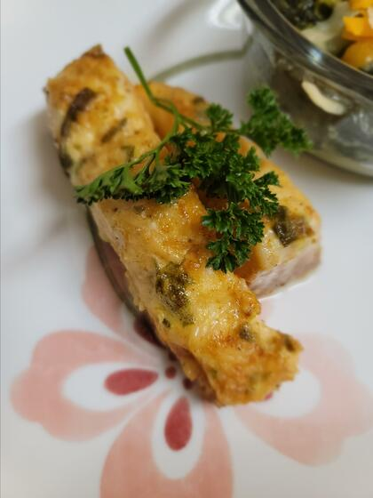

Heavenly Halibut

Description
Rich, cheesy topping goes perfectly with mild flavored halibut
Ingredients
- ½ cup grated Parmesan cheese
- ¼ cup butter, softened
- 3 tablespoons mayonnaise
- 2 tablespoons lemon juice
- 3 tablespoons chopped green onions
- ¼ teaspoon salt
- 1 dash hot pepper sauce
- 2 pounds skinless halibut fillets
Directions
- Preheat the oven broiler. Grease a baking dish.
- In a bowl, mix the Parmesan cheese, butter, mayonnaise, lemon juice, green onions, salt, and hot pepper sauce.
- Arrange the halibut fillets in the prepared baking dish.
- Broil halibut fillets 8 minutes in the prepared oven, or until easily flaked with a fork. Spread with the Parmesan cheese mixture, and continue broiling 2 minutes, or until topping is bubbly and lightly browned.